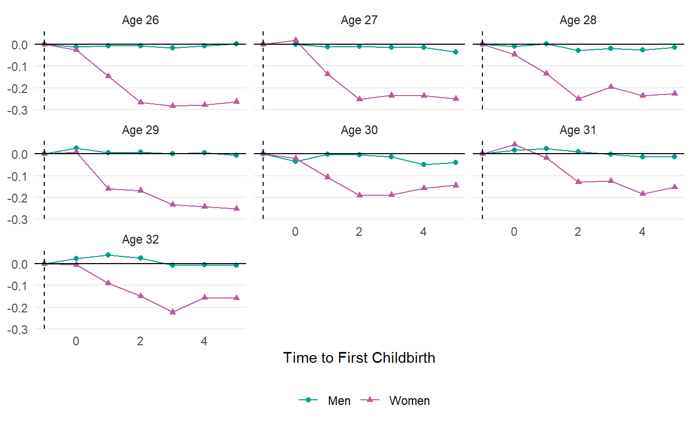
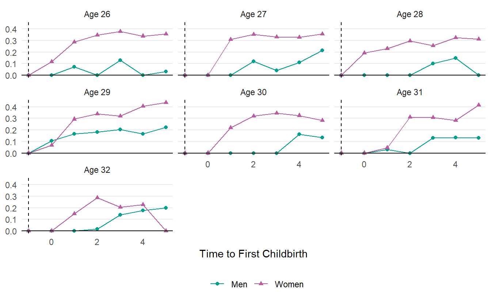
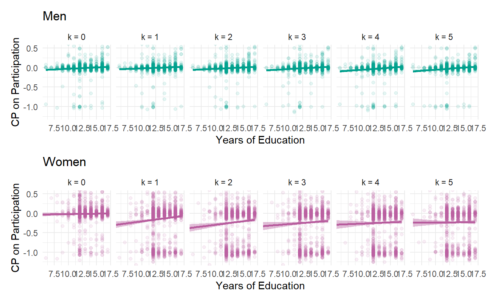
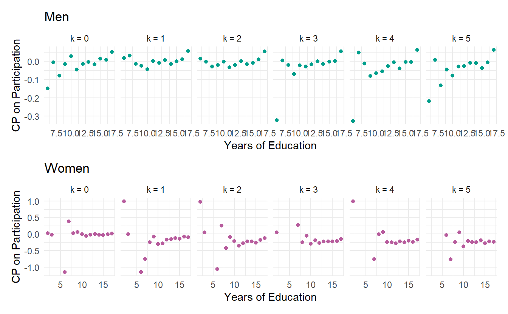

library(unitdid)
library(here)
library(tidyverse)Individual-level Child Penalties with PSID
Panel Study of Income Dynamics (PSID)
The PSID data is a longitudinal household survey of the United States and one of the longest and most famous panel surveys in the world. The study began in 1968 with a nationally representative sample of over 18,000 individuals living in 5,000 families. The data is available here for the registered users.
To avoid the convoluted cleaning tasks, I mostly use the cleaning codes provided by the Comparative Panel File (CPF). Their cleaning codes are developed for creating a harmonized panel data of seven countries (Australia, Germany, the UK, South Korea, Russia, Switzerland, and the US).
To replicate this article, you need to run
- Run the code of the CPF only for the PSID
- In step 4 (Add vars constant across all waves) of the
CPF-Code/03_PSID/us_01_3_GEt_vars.do, addER32024(birth year of the first child) us_01.dta-us_03.dtawill be produced
- In step 4 (Add vars constant across all waves) of the
- Run the following code to create a dataset for the child penalties
library(haven)
cpf_us01 <- read_dta(here("vignettes/us_01.dta"))
cpf_us03 <- read_dta(here("vignettes/us_03_CPF.dta"))
ever_birth <- cpf_us01 |>
select(pid, cyear = ER32024) |>
filter(cyear != 9999) |>
distinct()
cp_psid <- cpf_us03 |>
filter(country == 3) |>
select(id = pid,
year = intyear,
byear = yborn,
gender = female,
earn = incjobs_yg,
hours = whweek,
years_edu = eduy) |>
mutate(gender = if_else(gender == 0, "Men", "Women"),
particip = if_else(hours > 0, 1, 0),
wage = if_else(particip == 1, earn / hours, 0),
years_edu = if_else(years_edu < 0, NA_integer_, years_edu)) |>
right_join(ever_birth, by = c("id" = "pid")) |>
mutate(rel_time = year - cyear) |>
filter(!is.na(earn))
cpf_us01 |> glimpse()
save(cp_psid, file = here("vignettes/cp_psid.rds"))Analysis of Child Penalties on Participation
load(here("vignettes/cp_psid.rds"))
cp_psid <- cp_psid |>
mutate(eage = cyear - byear) |>
filter(cyear >= 1968,
year <= 1997, # The last year of the annual data
between(eage, 22, 40)) # The Age range of the first childbirth
mdl_particip <- cp_psid |>
unitdid(yname = "particip",
iname = "id",
tname = "year",
ename = "cyear",
bname = "byear",
by = c("gender"),
compute_varcov = "var")Mean of Child Penalties on Participation
sum_particip <- summary(mdl_particip, agg = "event_age", na.rm = TRUE) |>
filter(between(event_age, 26, 32))
df_plot <- sum_particip |>
filter(rel_time == 0) |>
mutate(rel_time = -1, mean = 0,
var = 0) |>
bind_rows(sum_particip) |>
mutate(lbl_facet = paste0("Age ", event_age))
df_plot |>
ggplot(aes(x = rel_time, y = mean,
color = gender, shape = gender)) +
geom_point() +
geom_line() +
geom_vline(xintercept = -1, linetype = "dashed") +
geom_hline(yintercept = 0) +
facet_wrap(~lbl_facet) +
scale_color_manual(values = c("#009F8C", "#B75C9D")) +
labs(x = "Time to First Childbirth",
y = NULL,
color = NULL, shape = NULL) +
theme_minimal() +
theme(panel.grid.minor = element_blank(),
panel.grid.major.x = element_blank(),
legend.position = "bottom")
Standard Deviation of Child Penalties on Participation
df_plot |>
ggplot(aes(x = rel_time, y = sqrt(var),
color = gender, shape = gender)) +
geom_point() +
geom_line() +
geom_vline(xintercept = -1, linetype = "dashed") +
geom_hline(yintercept = 0) +
facet_wrap(~lbl_facet) +
scale_color_manual(values = c("#009F8C", "#B75C9D")) +
labs(x = "Time to First Childbirth",
y = NULL, color = NULL, shape = NULL) +
theme_minimal() +
theme(panel.grid.minor = element_blank(),
panel.grid.major.x = element_blank(),
legend.position = "bottom")
Scatter Plot with Covariates
To highlight the flexibility of the individual child penalties, let’s plot the relationship between the years of education and the child penalties.
library(patchwork)
unitdid_particip <- get_unitdid(mdl_particip)
plot_scatter <- function(gender) {
clr <- ifelse(gender == "Men", "#009F8C", "#B75C9D")
unitdid_particip |>
filter(gender == {{gender}}, between(rel_time, 0, 5)) |>
mutate(lbl_facet = paste0("k = ", rel_time)) |>
ggplot(aes(x = years_edu, y = particip_tilde)) +
geom_point(color = clr, alpha = 0.1) +
geom_smooth(method = "lm", color = clr, fill = clr) +
facet_wrap(~lbl_facet, nrow = 1) +
labs(x = "Years of Education",
y = "CP on Participation",
title = gender) +
coord_cartesian(xlim = c(6, NA), ylim = c(-1.25, 0.5)) +
theme_minimal()
}
p1 <- plot_scatter("Men")
p2 <- plot_scatter("Women")
p1 / p2
On Binscatter
Another way to visualize the relationship is to use the binscatter (Cattaneo et al. 2023).
library(binsreg)
compute_binsreg <- function(gender, rel_time) {
est <- unitdid_particip |>
filter(gender == {{ gender }}, rel_time == {{ rel_time }}) |>
as.data.frame() |>
binsreg(x = years_edu, y = particip_tilde, data = _)
est$data.plot$`Group Full Sample`$data.dots |>
mutate(gender = gender, rel_time = rel_time)
}
bs <- map2(rep(c("Men", "Women"), times = 6),
rep(0:5, each = 2),
~compute_binsreg(.x, .y)) |>
list_rbind()plot_binsreg <- function(gender) {
clr <- ifelse(gender == "Men", "#009F8C", "#B75C9D")
bs |>
filter(gender == {{ gender }}) |>
mutate(lbl_facet = paste0("k = ", rel_time)) |>
ggplot(aes(x = x, y = fit)) +
geom_point(color = clr) +
facet_wrap(~lbl_facet, nrow = 1) +
labs(x = "Years of Education",
y = "CP on Participation",
title = gender) +
theme_minimal()
}
p1 <- plot_binsreg("Men")
p2 <- plot_binsreg("Women")
p1 / p2
References
Cattaneo, Matias D., Richard K. Crump, Max H. Farrell, and Yingjie Feng. 2023. “On Binscatter.” arXiv. https://doi.org/10.48550/arXiv.1902.09608.